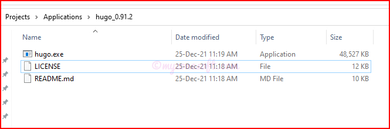

The latest release is tagged as Latest and will be placed at the top. Under the Assets section, you will find the downloads related to all the different Operating Systems. They’re all ZIP files.
Find the Windows files near the bottom (they’re in alphabetical order, so Windows is last) – download either the 32-bit or 64-bit file depending on whether you have 32-bit or 64-bit Windows.
Hugo Releases Assets Section
Move the ZIP file into your «DESTINATION_FOLDER» folder.
Double-click on the ZIP file and extract its contents.
You should now have three new files: The hugo executable (hugo.exe), LICENSE and README.md.

Hugo Installed on Local System
Add Hugo Executable to your Windows 10 PATH settings
Right click on the Start button.
Click on System.
Click on Advanced System Settings on the left.
Click on the Environment Variables… button on the bottom.
In the User variables section, find the row that starts with PATH (PATH will be all caps).
Double-click on PATH.
Click the New… button.
Type in the folder where hugo.exe was extracted, which is «DESTINATION_FOLDER» if you went by the instructions above. Give the PATH entry only till the folder which has hugo.exe and not the filename. Press Enter when you’re done typing.
Click OK at every window to exit.
Windows 10 PATH settings for Hugo Executable
Verify the Executable
Run a few commands to verify that the executable is ready to run, and then build a sample site to get started.
Open the command prompt(or Powershell), type hugo help and press the Enter key. You should see output that starts with:
hugo help command
If you do, then the installation is complete. If you don’t, double-check the path that you placed the hugo.exe file in and that you typed that path correctly when you added it to your PATH variable.
Working with Hugo
Generate new site
Run the command to generate a new site. I am using myzonesoft-hugo as the name of my site project:
hugo new site myzonesoft-hugo
hugo new site command
You should now have a directory at «DESTINATION_FOLDER»/myzonesoft-hugo. Change into that directory and list the contents. You should get output similar to the following:
hugo boilerplate folder structure
This is the directory which is the home for all the contents(articles, images, layouts, themes, etc.) related to the website we will be developing. This Hugo Directory Structure is explained in more details here.
Add a Theme
Next step is to finalize a theme for our website. Hugo provides users with lots of themes. See themes.gohugo.io for a list of themes to consider. For my website, I am using the Mainroad theme.
Install the selected theme into the Projects themes/<<THEME_NAME>> directory.
Content files can be created directly into the content directory. However, I am using Page Bundles to have more control over the contents.
You can manually create content files (for example as content/<CATEGORY>/<FILE>.<FORMAT>) and provide metadata in them, however you can use the new command to do a few things for you (like add title and date):
hugo new post/my-first-post/index.md
Hugo Create New Content
Hugo uses Markdown files(.md) to store its content. Everything is in flat files.
To know more about the Markdown Syntax, read this.
The newly created index.md will look something like this:
---
title: "My First Post"description: ""date: "2022-01-05T13:03:48+05:30"draft: true
---
The section that you see between the ‘- - -’ is called Front Matter. It houses the common attributes that are required across every posts.
Feel free to edit the content and simply refresh in browser to see changes quickly.
This will create a directory structure like below.:
content/
└── post
└── my-first-post
└── index.md
Such directory structure is known as Page Bundles.
We can store the images and other stuffs related to the article inside my-first-post directory.
Migrate contents from Wordpress to Hugo
At this stage we are ready to migrate the contents from the Wordpress to our newly created Hugo Site.
Export the Wordpress content
Go to your Wordpress Admin Page, Tools -> Export
Choose what to Export(Choose- All content) and Click on Download Export File button.
Wordpress Export Tool
A <WEBSITE_NAME>.WordPress.<DATE_OF_EXPORT>.xml an RSS file will be downloaded to your local machine.
This format, which is called an WordPress eXtended RSS or WXR file, will contain your posts, pages, custom post types, comments, custom fields, categories, tags, custom taxonomies, and users.
Convert Wordpress content to Hugo format
If you Google Search “Wordpress to Hugo Convertor”, you will find tons of plugins and tools.
Since I am on the basic plan of Wordpress, I could not use plugins and hence I was looking for tools.
Instructions on how to install and work with this tool is provided in their GitHub page.
The output directory will contain all the published posts, pages, taxonomies, metadata, and settings converted to Markdown and YAML formats from the Wordpress and ready to be dropped into Hugo.
Verify the Contents
The exported content would be in the Page Bundles with articles in the Markdown files and corresponding images. Review each of the contents carefully to make sure, everything is converted as expected.
Make sure the Front Matter, images and other relevant contents are correct. if not, make the necessary changes.
There could be some issues while doing the conversion using a tool, as Wordpress might have used some custom formats and attributes, which may not have been converted properly.
Use Wordpress Content in Hugo
Once you have verified and are satisfied with the quality of the exported content, we can copy these exported contents onto the Hugo Site Directory(created earlier).
Now, when we refresh the browser, we will see the migrated contents already on the Hugo Site.
You have moved all data from WordPress to a local Hugo install.
Hosting the website on GitHub Pages
We can host our static website on GitHub Pages for free. The best part is that you can even use your own custom domain.
You get one site per GitHub Account and unlimited project sites.
You need a GitHub Account for hosting your website on GitHub Pages. If you do not have one, create your own GitHub Account for free here.
Create a Repository
Once you have the GitHub Account, create a new public repository named «USERNAME».github.io, where username is your username (or organization name) on GitHub.
If the first part of the repository doesn’t exactly match your username, it won’t work, so make sure to get it right.
In your GitHub homepage, on the top right corner, click on the + symbol and choose New repository.
You will be presented with new repository creation page.
Enter the name as given above(«USERNAME».github.io).
Description is optional, but good to have.
Access for this repository should be Public.
Keep everything else as it is.
Click on Create repository button.
Create Repository for GitHub Pages
Once the repository is created, you will be presented with the empty repository welcome page.
GitHub Empty Repo Welcome Page
Deploy the Code to GitHub Pages
In the Project Directory, run the following command, to publish your project:
hugo
Hugo, by default, will publish only the pages that are marked with draft: false in the Front Matter. So make sure to mark the pages you want to be published as draft: false.
This will create a public folder, it contains the web files(might include .HTML, .css, .js, etc.) that Hugo automatically generates. These are the published files that are used for hosting.
Hugo Build
In terminal, go to the directory of the public folder, then run following commands:
After running the above command, «USERNAME».github.io is updated with the code from the public folder.
First Commit into the GitHub Repo
Once the code is committed and pushed to the Repo, GitHub automatically starts an Action Workflow called pages-build-deployment.
After the workflow finishes execution, we can view our new website on the link: https://«USERNAME».github.ioWebsite Launched on Github Pages Successfully
Working with Custom Domain on GitHub Pages
It is nice to have a website up and running on GitHub Pages. However, if you are looking at migrating your existing site to GitHub Pages, then this might not be enough and we would want our existing domain to serve the content from GitHub Pages and not the .github.io domain.
Under “Custom domain”, type your «YOUR-EXISTING-DOMAIN», then click Save. This will create a commit that adds a CNAME record file in the root of your publishing source. DO NOT DELETE THIS FILE.Custom Domain changes on GitHub Pages
Update the DNS Provider
I have my domain registered with GoDaddy and so these instructions are specific to that. All you need to do is set A & CNAME records for the selected domain.
Sign into GoDaddy Account.
Choose My Domain -> Click on your Domain -> In the Domain Settings, select Manage DNS
Since I have already hosted my website through Wordpress, in the Manage DNS section, I see entries for Wordpress Nameservers and hence GoDaddy will not allow to add new DNS Records.
Custom Wordpress Nameservers used in GoDaddy
We have to first, change to using the default Nameservers from the GoDaddy. Click on the Change button in the Nameservers section and choose “I want to use GoDaddy default nameservers(recommended)”.
Once the changes are effective, we will see DNS Records section filled with some default values from GoDaddy.
Default DNS Records entries by GoDaddy
If there are any additional A records and CNAME records, those can be deleted.
Now we need to add A records and CNAME records.
A records will be relevant to the GitHub Pages servers.
To redirect www subdomain to the original domain, add a CNAME record with your GitHub pages profile URL with a .(dot) in the end.
Click on the ADD button in the DNS Records section and add these below mentioned values
Usually it refreshes instantly. Sometimes it takes up to 48 hours for DNS Records to be reflected properly. So you might have to check following day.
Once these updates are done, you can go to your existing domain https://«YOUR-EXISTING-DOMAIN» and see the new Hugo site hosted on the domain.
Even going to either https://«USERNAME».github.io or https://www.«YOUR-EXISTING-DOMAIN» would redirect the users to same site.
My existing domain website hosted with Hugo contents
With this, the migration of your website from Wordpress to GitHub Pages powered by Hugo is complete.
NOTE: Replace «VARIABLES» with relevant data. It indicates variable to be replaced with your data.
Variables that needs to be replaced in this article, are listed below:
«DESTINATION_FOLDER»
«THEME_NAME»
«USERNAME»
«YOUR-EXISTING-DOMAIN»
If you want to learn about how to enhance your Hugo project, with some additional features, read this article
About Prashanth Bhat
Prashanth Bhat has about 15+ years of Developing/Coding knowledge. He loves to work with Technology, learn new things and share his learnings with others. For comments/feedback you can reach here.